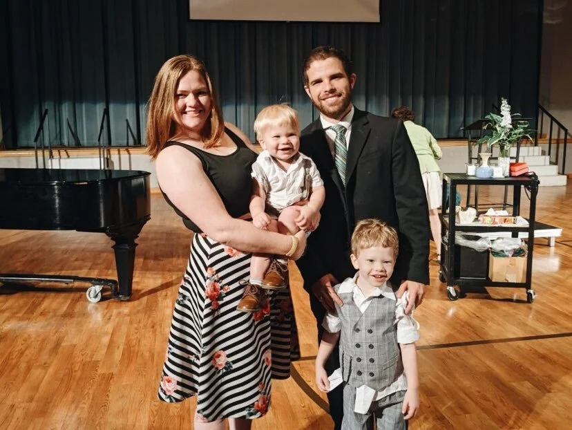

Our Leadership
Meet the team dedicated to building a beloved community of disciples through authentic expression and radical grace.
Rev. Evve Kuykendall (he/him)
Pastor & Executive Director
Evve is deeply passionate about celebrating the image of God in every person and fostering connections that transcend differences. A self-proclaimed nerd, he finds joy in comic books and gaming as unexpected reflections of divine truth.
Laureen Kuizon (she/her)
Associate Director
An Advertising and PR graduate of UTA, Laureen realized her call to ministry at the Wesley. She is pursuing her M.Div at SMU Perkins and finds community through deep faith, inclusivity, and anything Snoopy.
Jesus Canales (he/him)
Director of Community Outreach
Jesus is a senior at UTA majoring in PR and Advertising with a focus on Nonprofits. Originally from Houston, he leads advocacy efforts and curates spaces for underrepresented voices at the Wesley.
Derek Goodrich (he/him)
Ministry Intern
A senior studying Political Science, Derek was connected to the Wesley through Glen Lake Camp. He nerds out about maps, hiking, and finding the best food spots in Arlington—ask him about Taqueria Maria Bonita!

Sarah Graves (she/her)
Administrative Assistant
Sarah is a problem solver who has traveled to 14 countries. She loves rock climbing and baking, and found her faith, friends, and the love of her life right here at the Wesley.